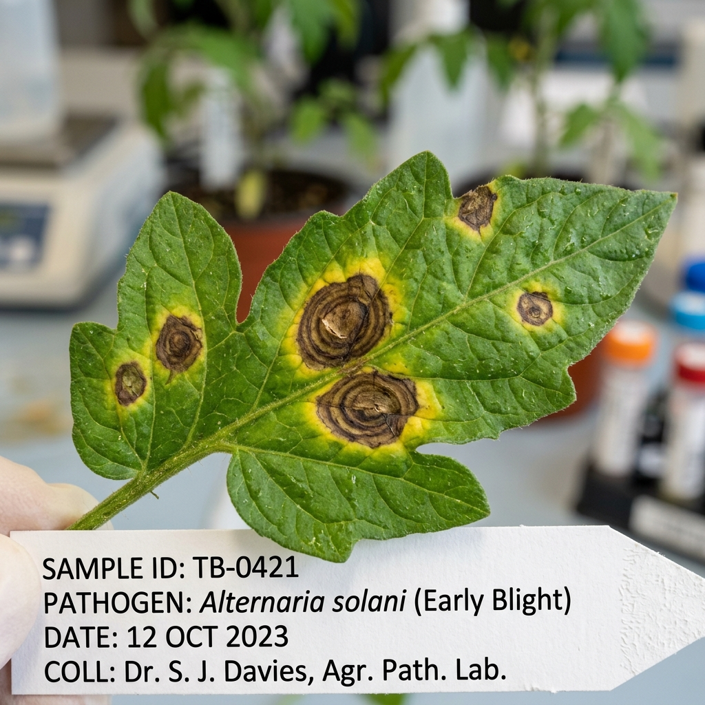

Instant diagnosis for leaves, fruits & vegetables with organic remedies & KAU certified treatments
Click anywhere here or drag & drop. Supports JPG, PNG, WEBP from camera or gallery
Identifying plant species, disease symptoms, and KAU remedies
Or click a sample photo to test instant diagnosis:

Scanned Plant SampleEnsure 60cm plant spacing for good ventilation, mulch soil to prevent soil splash onto foliage, and use certified seeds.